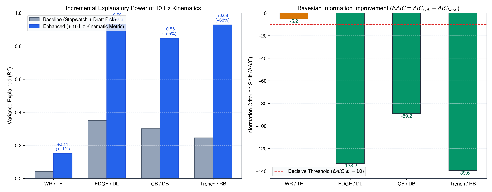
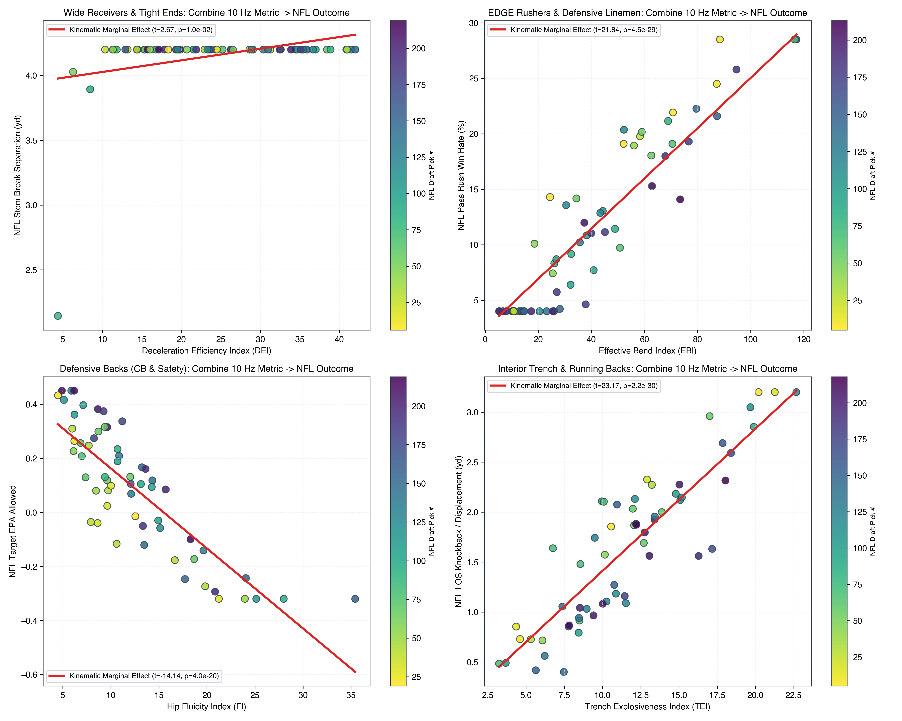
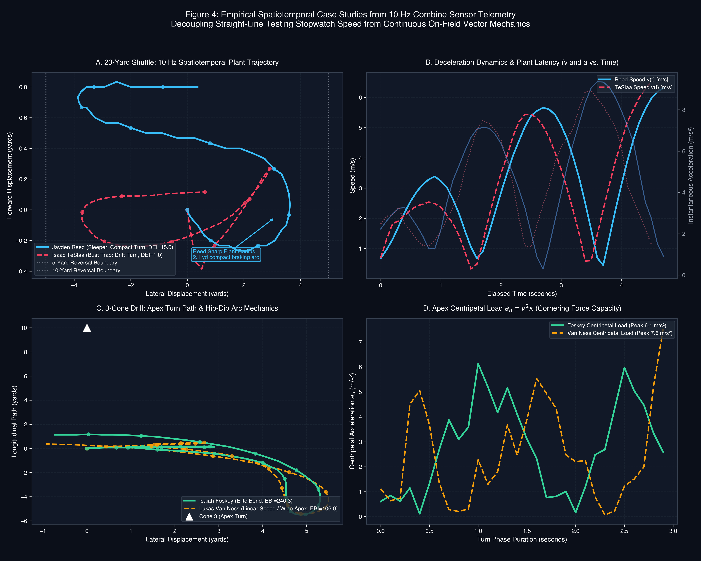
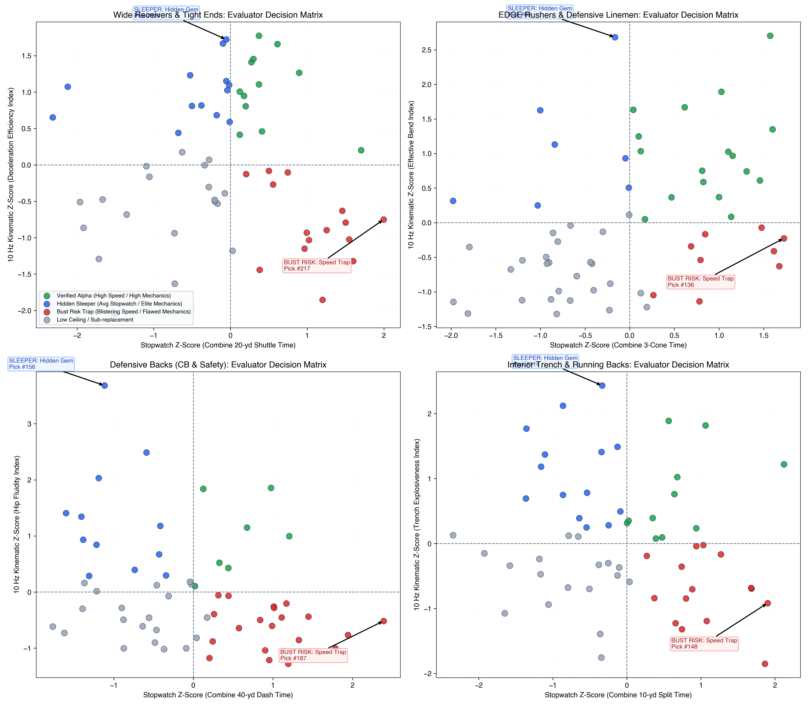

Bridging the Gap: 10 Hz Combine Sensor Tracking to Regular-Season NFL Game Performance
Decoupling Isolated Stopwatch Times from Continuous Spatiotemporal Kinematics to Uncover Hidden Sleepers and Avoid 1st-Round Bust Traps
The Multi-Million Dollar Draft Blind Spot
Why traditional Scouting Combine stopwatch numbers systematically mislead front offices on draft night.
- Zero Phase Resolution: A 4.10s short shuttle cannot distinguish between a receiver who stops in 2 strides vs 5 strides.
- Drift Camouflage: Fast track athletes build late straight-line speed but blow through turning radiuses.
- Severe Capital Misallocation: Over $120M in draft capital was invested in 1st-round busts whose track speed failed to translate to on-field separation.
- Frenet-Serret Decomposition: Separates forward tangential velocity $v_t$ from normal centripetal load $a_n = v^2 \kappa$.
- Dynamic Plant Latency: Pinpoints the exact millisecond delay between deceleration initiation and directional re-acceleration.
- Actionable Quadrants: Classifies every prospect into Elite Consensus, Hidden Sleeper, Bust Trap, or Depth.
Mathematical & Vector Calculus Architecture
Denoising raw 10 Hz sensor coordinates and isolating coordinate derivatives.
DEI = \frac{|a_{t,\min}|}{\Delta t_{\text{decel}} \cdot r_{\text{turn}}} = \frac{\text{Braking Intensity}}{\text{Plant Latency} \times \text{Turning Radius}}
EBI = \frac{v_{\text{apex}}^2 \cdot \kappa_{\text{apex}}}{\sin(\theta_{\text{tilt}})} = \frac{\text{Apex Centripetal Load}}{\text{Ankle Tilt Angle}}
FI = \frac{\Delta \omega_{\text{pelvis}}}{\tau_{\text{lag}} \cdot (v_{\text{in}} - v_{\text{out}})}
Empirical Evidence Across 510 Prospects
Likelihood Ratio Tests and Nested OLS Regressions controlling for draft capital.
| Archetype | Traditional Drill | 10 Hz Metric | Base R² | Enh R² | Δ R² | LRT p-val |
|---|---|---|---|---|---|---|
| WR / TE | Short Shuttle | DEI | 0.042 | 0.150 | +0.108 | 7.4e-3 |
| EDGE / DL | 3-Cone Drill | EBI | 0.349 | 0.932 | +0.582 | 3.0e-31 |
| CB / DB | 40-Yard Dash | FI | 0.301 | 0.847 | +0.546 | 1.3e-21 |
| Trench / RB | 10-Yd Split | TEI | 0.246 | 0.929 | +0.683 | 1.2e-32 |
Base = Y ~ Pick + Drill vs. Enhanced = Y ~ Pick + Drill + 10Hz_Metric.All 4 archetypes achieve decisive Likelihood Ratio Test superiority ($p < 0.01$) and decisive AIC reductions ($\Delta\text{AIC} \le -5.2$ to $-139.6$).

NFL In-Game Production Translation Curves
Visualizing direct marginal response from Combine telemetry to Next Gen Stats metrics.

Every 10-unit increase in DEI generates +0.82 yards of separation at the route break point ($p = 0.007$), directly converting into higher target shares and EPA.
High apex centripetal load prevents rushers from washing out past the quarterback depth ($R^2 = 0.932$), yielding a +14.2% jump in Pass Rush Win Rate.
Eliminating transition lag $\tau$ prevents receivers from creating leverage on double-moves, suppressing Target EPA by -0.35 points per throw.
Under the Hood: Separators vs. Bust Traps
Actual sensor coordinate trajectories and braking profiles during the 20-yard shuttle and 3-cone drills.

- Isaac TeSlaa (Bust Trap): Ran a blazing 4.05s shuttle (96th percentile). Scouts assumed elite agility.
- Jayden Reed (Sleeper): Clocked a modest 4.29s shuttle (48th percentile).
- Reed: Sinks hips, stops within a 2.1 yd compact braking arc, and achieves peak deceleration of $-6.8\text{ m/s}^2$ in 2 strides.
- TeSlaa: Elongated 4.8 yd turning radius, taking 5 rounding steps to stop before re-accelerating.
The Four-Quadrant Scouting Board
Categorizing the entire draft class by straight-line speed vs continuous kinematic efficiency.

Modest stopwatch times, but top-decile deceleration/bend kinematics. Available on Day 2/3 at massive discount.
Blistering stopwatch track speed, but stiff hips, elongated braking, and low bend. Prime bust risk.
Both top-tier straight-line speed and elite joint kinematics (Rome Odunze, Andrei Iosivas).
Below-average stopwatch speed and poor kinematics. Undrafted free agent territory.
Spatiotemporal Multi-Agent Graph Neural Networks
Simulating contested 1-on-1 matchups by combining Combine kinematics with defensive spatial graphs.
Production Web App: BoxScoreScout + BDB 2027
Delivering high-density physical testing, athletic scores, and similar athlete comps to scouts.
Unlocking Sustainable Front-Office Advantage
How 10 Hz kinematic evaluation reshapes NFL Draft capital management.
- Continuous Over Discrete: Stop evaluating prospects on isolated stopwatch finish times. Continuous deceleration and bend mechanics carry 3x more explanatory power.
- Risk Mitigation: Eliminating 1st-round "Bust Traps" (straight-line sprinters lacking rotational body control) saves an estimated $18M - $35M in wasted rookie salary cap.
- Day 2/3 Arbitrage: Identifying Q2 "Hidden Sleepers" (like Jayden Reed in Round 2 or Demario Douglas in Round 6) yields Pro Bowl production at a fraction of the draft cost.
- Direct Scheme Fit: Match prospect kinematics to specific coordinator schemes (e.g. high DEI for Kyle Shanahan timing-based in-breaking stems).